7 Solutions
7.1 Chapter 1
7.1.1 Data on Malnutrition in Zambia
- Load the dataset and build the variables so that they can be used for a regression analysis.
require(foreign) # install foreign package if you do not have it yet
# See section 1.6.2 e-book for information on the dataset.
# dat = read.spss("Zambia.SAV", add.undeclared.levels = "no")
dat = read.spss("Zambia.SAV")
# Construct system matrix
# The idea behind this exercise is to be aware that data cleaning is most of the times the real issue
# with a real problem. It is sensitive to say that 80% of the work is cleaning and only 20% is modeling.
# Extract response variable i.e. HW70 Height for age standard deviation (according to WHO)
y = dat$HW70
y[y == 9996] = NA
y[y == 9997] = NA
y[y == 9998] = NA
y[y == 9999] = NA
# Revert tranformation (i.e. z-score)
y = y/100
# Variable 1: The calculated months of breastfeeding gives the duration of breastfeeding
x1 = dat$M5
x1[x1 == 94] = 0
x1[x1 == 97] = NA
x1[x1 == 98] = NA
x1[x1 == 99] = NA
x1[x1 > 40] = NA
# Variable 2: Age in months of the child
x2 = dat$HW1
# Variable 3: Age of the mother at birth
x3 = dat$V012 - dat$B8
x3[x3>45] = NA
# Variable 4: Body mass index (BMI) of the mother
x4 = dat$V445
x4 = x4/100 # no sense without this division
# Variable 5: Height of the mother in meters
x5 = dat$V438
x5[x5 == 9998] = NA
x5[x5 == 9999] = NA
x5[x5 < 1300] = NA
x5[x5 > 1900] = NA
x5 = x5/1000 # it was in mm, we need to transform from original
# Variable 6: Weight of the mother in kilograms
x6 = dat$V437
x6=x6/10 # we need to go back to Kg
# Variable 7: De facto region of residence
# Creating dummies (i.e. indicator functions) for each level of an existing factor enables
# to check the coefficients of each level in a possible future model estimation
x7 = as.factor(dat$V101)
x7 = model.matrix(~x7-1)
dim(x7)
# Variable 8: Mother highest education level attended
x8 = as.factor(dat$V106)
x8 = model.matrix(~x8-1)
dim(x8)
# Variable 9: Wealth index factor score
x9 = dat$V191
# Variable 10: Weight of child at birth given in kilograms with three implied decimal places
x10 = dat$M19
x10[x10 == 9996] = NA
x10[x10 == 9997] = NA
x10[x10 == 9998] = NA
x10[x10 == 9999] = NA
x10 = x10/1000
# Variable 11: Child Sex
x11 = dat$B4
# Variable 12: Preceding birth interval is calculated as the difference in months between the current birth and the previous birth
x12 = dat$B11
x12[x12 > 125] = NA
# Variable 13: Drinking Water
x13 = dat$V113
x13 = model.matrix(~x13-1)
x13 = x13[,c(2,3,4,8,9,13,17,18)]
dim(x13)
levels(x13)
mat.sys = na.omit(cbind(y,x1,x2,x3,x4,x5,x6,x7,x8,x9,x10,x11,x12,x13))
dim(mat.sys)[2]
# Number of regressor
p = dim(mat.sys)[2]
# Construct X and Y
y = mat.sys[,1]
X = mat.sys[,2:p]
# Create a dataframe
data_zambia = cbind(y,X)
data_zambia = data.frame(data_zambia)
- Associate proper names to each variable (hint: look at the previous comments in the r chunk).
colnames(data_zambia) = c("Height for age sd", "Breastfeeding duration (months)","Age of the child (months)", "Age of the mother (years)", "BMI mother", "Heigth mother (meter)", "Weight mother (kg)", "Region:Central", "Region:Copperbelt", "Region:Eastern", "Region:Luapula", "Region:Lusaka", "Region:Northern", "Region:Northwestern", "Region:Southern", "Region:Western", "Ed:No education", "Ed:Primary", "Ed:Secondary", "Ed:Higher", "Wealth index factor score", "Child weight at birth (kg)", "Child sex", "Interval between births","Water:Piped into dwelling", "Water:Piped to yard/plot", "Water:Public tap/standpipe", "Water:Protected well", "Water:Unprotected well", "Water:River/dam/lake/ponds/stream/canal/irrigation channel", "Water:Bottled water", "Water:Other")
- Perform a linear regression on all the available variables.
attach(data_zambia)
lm_zambia = lm(`Height for age sd` ~ . -`Region:Central`- `Ed:No education`, data = data_zambia)
# We take off two levels to avoid multicollinearity. This should always be done when you create dummies.
summary(lm_zambia) # read the output understand the benchmark of the factor
lm_zambia_full = lm(`Height for age sd` ~ . , data = data_zambia)
summary(lm_zambia_full) #here it is R who choses the benchmark for the factors (i.e. NA variables)
detach(data_zambia)
- Reduce the number of covariates (e.g. using the t-test) and add some interactions. Perform a linear regression on the new dataset.
attach(data_zambia)
# Eliminate variables with t-test in a stepwise manner (fixed alfa = 0.05 in this case)
model_zambia_reduced = lm(`Height for age sd` ~ ., data = data_zambia[,c(1:2,4,9:16,21:23)])
summary(model_zambia_reduced) # notice what is happening to the age of the mother variable
# Introduce one interaction in the reduced model. We start with the childsex factor.
model_zambia_int = lm(`Height for age sd` ~ . + `Breastfeeding duration (months)`*`Child sex`, data = data_zambia[,c(1:2,4,9:16,21:23)])
summary(model_zambia_int) #We take out the interaction from the model as it is not significant
#### Remember: the hierarchical effect states that anytime you add an interaction also the marginal effects
#### should be part of your model
detach(data_zambia)
- Other available procedures for a first model selection in this specific case:
# (1) VIF (variance inflation factor) for avoiding multicollinearity,
# (2) Automatic Stepwise procedures (e.g. forward and backward)
# (3) Exhaustive search (See practical 3 exercises)
# Example with an automatic stepwise procedure
help("step")
stepwise_procedue = step(lm_zambia_full,direction = "backward") #or forward
# This procedure evaluates, given a criterion, a sequence of variables stopping when
# the criterion is increasing
- Analyse your chosen estimated model with a residual analysis (e.g. residuals vs fitted plot, normal QQ plot etc.).
# Validate your model looking at residuals vs fitted plot and normal QQ plot
plot(model_zambia_reduced, which = 1) # Residuals vs fitted: no particular structure
plot(model_zambia_reduced, which = 2) 
# Normal QQ plot: We observe right tail which is not compatible with a normal assumption7.1.2 Prognostic Factors in Childhood Leukemia
Exercises
- Load the data from the URL http://web.stanford.edu/~hastie/CASI_files/DATA/leukemia_big.csv
leukemia_big <- read.csv("http://web.stanford.edu/~hastie/CASI_files/DATA/leukemia_big.csv")- Create the response variable y according to the number of ALL and AML patients. In the same fashion create the matrix X of independent variables.
See https://web.stanford.edu/~hastie/CASI_files/DATA/leukemia.html for further details.
leukemia_mat = as.matrix(leukemia_big)
dim(leukemia_mat)
leukemia_mat = t(leukemia_mat) #this is the design matrix for the analysis
# Generate the 0 and 1 values for the two different categories: there are 20 ALL, 14 AML, 27 ALL and
# 11 AML for a total of 47 ALL and 25 AML.
# Given the above excerpt from the cancer society, I have decided to code ALL as 1 and AML as 0 since
# doctors are interested in knowing the characteristics which differentiate ALL from AML in order to
# understand if we can use standard treatment or a more aggressive one.
y = c(rep(1,20),rep(0,14), rep(1,27), rep(0,11)) #the response vector
length(y)
X = leukemia_mat
dim(X)- Choose the correct exponential family for this situation and perform a GLM on the data. Comment on the results that you obtain.
model_glm = glm(formula = y ~ X,family = "binomial")
summary(model_glm) #singularity issues in the IWLS algorithm of GLM. It is impossible to invert the matrix.
# The binary Lasso is a possible way to solve the issue and have an actual estimate. See glmnet package.7.2 Chapter 2
7.2.1 Cross-validation
(solutions provided by Alexander Maslev, Hanxiong Wang and Minyoung Lee).
Program k-fold Cross-Validation (with k=2) and do model selection in a specific simulation setting with an exhaustive search. Follow these steps:
- Generate from a MVN (multivariate normal) a matrix \(\mathbf{X_{n*p}}\) with \(n = 1000\) and \(p = 5\). You can choose the location vector as you wish but set the scale matrix as the identity.
We have chosen the location vector [2,4,6,8,10] and the scale matrix as the identity.
n<-1000
p<-5
Mu<-c(2,4,6,8,10) # location vector
sigma<-diag(5) # scale matrix as the identity
X<-mvrnorm(n , Mu, sigma)
- Choose the generating vector \(\boldsymbol{\beta }= [3 \; 1.5 \; 0 \; 2 \; 0]\) and retrieve the signal to noise ratio of this setting.
We found in Wikipedia that the statistical definition of SNR is the reciprocal of the coefficient of variation (i.e. the ratio of mean to standard deviation of a signal or measurement) : \[SNR = \frac{\mu}{\sigma}\] where \(\mu\) is the signal mean or expected value and \(\sigma\) is the standard deviation of the noise.
beta<-c(3,1.5,0,2,0)
e<-rnorm(n, mean = 0, sd = 1)
SNR<-mean(X%*%beta)/sqrt(var(e))
SNR## [1] 27.90095In the engineering literature, there is an alternative definition:
\[SNR_{eng} = \frac{Var(f(x))}{Var(\epsilon)}\] where \(f(x)\) is the chosen prediction rule (e.g. linear function in the OLS case) and \(\epsilon\) is the noise. You can fix in advance your SNR with the following code and generate the data accordingly:
signal_to_noise_ratio = #number to fix as you wish#
data = X%*%beta
noise = rnorm(n,0,1)
k = sqrt(var(data)/(signal_to_noise_ratio*var(noise)))
y_hat_eng = data + k*noise # how you generate data to retrieve your fixed signal to noise ratio
- Generate \(\hat{\mathbf{y}}\) thanks to the relation \(\mathbf{y} = \mathbf{X_{n*p}} \; \boldsymbol{\beta} + \boldsymbol{\epsilon}\) where \(\epsilon_{i}\) is a standard normal, \(n = 1000\) and \(p = 5\). Suppose for simplicity that the errors are uncorrelated.
Y_hat<-X%*%beta+e
- Split the data randomly in two halves (k=2) and use the training set to determine \(\hat{\boldsymbol{\beta}}\). Then, compute the squared loss function as prediction error measure for each possible model. Observe which model is the best model.
index <- sample(1:n, size=0.5*n)
# Split data
y_train<- Y_hat[-index,]
x_train<-X[-index,]
y_test<- Y_hat[index,]
x_test<-X[index,]
index_sub_choose<-c(1:p)
sub_matrix <- matrix(data = NA,ncol = p,nrow = 2^p-1)
t=0
for(i in 1:5)
{
index_matrix <- combn(index_sub_choose,i)
for(j in 1:ncol(index_matrix))
{
t <- t+1
index_sub <- index_matrix[,j]
sub_matrix[t,c(index_sub)] <- 1
}
}
k<-nrow(sub_matrix)
cv <- matrix(data=NA,nrow = k,ncol = 1)
for(j in 1:k){
Xsub <-x_train[,which(sub_matrix[j,]==1)]
betaMLE <-solve(t(Xsub)%*%Xsub)%*%t(Xsub)%*%y_train
new_Y <-x_test[,which(sub_matrix[j,]==1)]%*%betaMLE
cv[j,] <- t(y_test-new_Y)%*%(y_test-new_Y)
}
BEST_cv<-which(sub_matrix[which.min(cv),]==1)
BEST_cv## [1] 1 2 4 5Xsub_cv<-x_train[,BEST_cv]
betaMLE_cv<-solve(t(Xsub_cv)%*%Xsub_cv)%*%t(Xsub_cv)%*%y_train
betaMLE_cv## [,1]
## [1,] 3.03433961
## [2,] 1.51075393
## [3,] 2.01760617
## [4,] -0.02911818Each time it changes but most of the times we obtain the best model when p=5. The beta sometimes is not close to generating vector \(\beta\) = [3 1.5 0 2 0].
- Suppose now that we increase the size of \(\boldsymbol{\beta}\) to 100 (i.e. \(p = 100\) ). Calculate the number of possible models to evaluate together with an estimate of the time needed for an exhaustive search (hint: use previous results). Conclude on the feasibility of this task.
## [1] 1.267651e+30## [1] 6.915153e+27When we run a CV process with p=5, it takes 0.1691079 seconds. For p = 5, we can have 31 different models thanks to Newton’s binomial theorem (i.e. \(2^p - 1\)). Unfortunately when we increase p to 100, we have 1.26e+30 different models. Thus it will take approximately 1.9e+24 hours. This is the case when we do k=2 cross validation. Moreover if we increase the number of k, we will drastically increase the time needed. This task is not feasible.
7.2.2 Akaike Information Criterion
(solutions provided by Alexander Maslev, Hanxiong Wang and Minyoung Lee).
- Program AIC and do model selection in a specific simulation setting with an exhaustive search (follow the passages listed in the CV exercise section).
n<-1000
p<-5
Mu<-c(2,4,6,8,10) # location vector
sigma<-diag(5) # scale matrix as the identity
X<-mvrnorm(n , Mu, sigma)
beta<-c(3,1.5,0,2,0)
e<-rnorm(n, mean = 0, sd = 1)
SNR<-mean(X%*%beta)/var(e)
Y_hat<-X%*%beta+eindex_sub_choose<-c(1,2,3,4,5)
sub_matrix <- matrix(data = NA,ncol = 5,nrow = 31)
t=0
for(i in 1:5)
{
index_matrix <- combn(index_sub_choose,i)
for(j in 1:ncol(index_matrix))
{
t <- t+1
index_sub <- index_matrix[,j]
sub_matrix[t,c(index_sub)] <- 1
}
}
# AIC
RSS<-rep(0,k)
AIC<-rep(0,k)
k<-nrow(sub_matrix)
for(j in 1:k){
Xsub<-as.matrix(X[,which(sub_matrix[j,]==1)])
betaMLE<-solve(t(Xsub)%*%Xsub)%*%t(Xsub)%*%Y_hat
new_Y<-Xsub%*%betaMLE
for(i in 1:(n/2)){
RSS[j]<-RSS[j]+(new_Y[i]-Y_hat[i])^2
}
AIC[j]<-RSS[j]/var(e)+2*ncol(Xsub)
}
BEST<-which(sub_matrix[which.min(AIC),]==1)
BEST## [1] 1 2 4Xsub<-as.matrix(X[,BEST])
betaMLE<-solve(t(Xsub)%*%Xsub)%*%t(Xsub)%*%Y_hat
betaMLE## [,1]
## [1,] 2.982799
## [2,] 1.440587
## [3,] 2.035385Each time it changes but most of the times we obtain the best model when p=4 in position[1 2 4 5]. The estimated beta is very close to generating vector \(\beta\) = [3 1.5 0 2 0].
The above results hold not considering \(\sigma\) and the intercept as parameters. In the general formulation of the Akaike’s information criterion, \(p = dim(\Theta)\) where \(\Theta\) is the parameters space.
As we computed in point (e) in CV exercise, when p = 100, we have 1.26e+30 different model. The time needed to run the AIC process with p = 5 takes 0.2441621 seconds. When we calculate the time that we need to run when p = 100, we obtain approximately 2.7e+24 hours. Thus we still think that the task to do all the combinations when p = 100 is not feasible.
## [1] 1.267651e+30## [1] 9.984266e+27## [1] 2.773407e+24
- Compare the performance of your programmed CV and AIC by replicating 100 times the tasks. In particular you should evaluate three specific criteria: the proportion of times the correct model is selected (Exact), the proportion of times the selected model contains the correct one (Correct) and the average number of selected regressors (Average \(\sharp\))
## Rep 100 times AIC
cv <- matrix(data=NA,nrow = k,ncol = 1)
Exact<-data.frame(t(c(0,0)))
colnames(Exact)<-c("AIC","CV")
AverageN<-matrix(NA,nrow=100,ncol = 2)
colnames(AverageN)<-c("AIC","CV")
Correct<-data.frame(t(c(0,0)))
colnames(Correct)<-c("AIC","CV")
for(l in 1:100){
### SETTING ###
n<-1000
p<-5
Mu<-c(2,4,6,8,10) # location vector
sigma<-diag(5) # scale matrix as the identity
X<-mvrnorm(n , Mu, sigma)
beta<-c(3,1.5,0,2,0)
e<-rnorm(n, mean = 0, sd = 1)
Y_hat<-X%*%beta+e
### AIC ###
RSS<-rep(0,k)
AIC<-rep(0,k)
for(j in 1:k){
Xsub<-as.matrix(X[,which(sub_matrix[j,]==1)])
betaMLE<-solve(t(Xsub)%*%Xsub)%*%t(Xsub)%*%Y_hat
new_Y<-Xsub%*%betaMLE
for(i in 1:(n/2)){
RSS[j]<-RSS[j]+(new_Y[i]-Y_hat[i])^2
}
AIC[j]<-RSS[j]/var(e)+2*ncol(Xsub)
}
BEST<-sub_matrix[which.min(AIC),]
BEST[is.na(BEST)] <-0
if(sum(BEST-c(1,1,0,1,0))==0){
Exact[1]<-Exact[1]+1
}
if(sum((BEST[c(1,2,4)]-c(1,1,1)))==0){
Correct[1]<-Correct[1]+1
}
AverageN[l,1]<-sum(BEST)
### CV ###
index <- sample(1:n, size=0.5*n)
y_train<- Y_hat[-index,]
x_train<-X[-index,]
y_test<- Y_hat[index,]
x_test<-X[index,]
for(j in 1:k){
Xsub <-x_train[,which(sub_matrix[j,]==1)]
betaMLE <-solve(t(Xsub)%*%Xsub)%*%t(Xsub)%*%y_train
new_Y <-x_test[,which(sub_matrix[j,]==1)]%*%betaMLE
cv[j,] <- t(y_test-new_Y)%*%(y_test-new_Y)
}
BEST_cv<-sub_matrix[which.min(cv),]
BEST_cv[is.na(BEST_cv)] <-0
if(sum(BEST_cv-c(1,1,0,1,0))==0){
Exact[2]<-Exact[2]+1
}
if(sum((BEST_cv[c(1,2,4)]-c(1,1,1)))==0){
Correct[2]<-Correct[2]+1
}
AverageN[l,2]<-sum(BEST_cv)
}
Exact/100## AIC CV
## 1 0.84 0.47Correct/100## AIC CV
## 1 1 1colMeans(AverageN)## AIC CV
## 3.20 3.63In this part, we have simulated the AIC process and the CV process for 100 times and evaluated the three criteria. We have found that AIC gives better results than CV in terms of Exact models and it has a lower number of selected regressors on average. Both methods achieves model selection consistency in this simple setting as the proportion of correct models reaches the value of 1.
This result is expected since AIC is derived from the likelihood which inherits all the nice properties (e.g. Cramer-Rao bound etc.) when the model is correct. On the other hand, CV is a non parametric method thus inferior by definition to the AIC in this setting. However in a real application our conjectured model maybe far from the truth and CV could be a better choice.
- In the same simulation setting outlined in the CV exercise section, generate from a MVN (multivariate normal) a matrix \(\mathbf{X_{n*p}}\) with \(n = 1000\) and \(p = 5\) but now fix the scale matrix with an autoregressive form \(\boldsymbol{\Sigma}=[\sigma_{lm}]_{l,m=1,\ldots,p}\) with \(\sigma_{lm} = \rho^{\mid l - m\mid}\). Compare the performance of CV and AIC for \(\boldsymbol{\rho} = [0.2 \; 0.5\; 0.7]\) (\(\rho = 0\) corresponds to the identity case that you have already treated).
There are different sources of randomness: X matrix, epsilon (error), y (induced) and the split for CV.We need to choose what to preserve: we replicate every time only the randomness of epsilon and of course the split of the CV thus we need to set a seed for the X matrix. All this discussion on randomness is pivotal for a significant and controlled simulation setting.
require(MASS)
set.seed(5) # For the X matrix
n = 1000
p = 5
rho = 0.5 # change rho as you please to inspect other correlations among the predictors
mu = rep(1,p)
sigma = rep(0,p^2)
sigma = matrix(data = sigma, ncol = p,nrow = p)
# Autoregressive structure
for (i in 1:p) {
for (j in 1:p) {
sigma[i,j] = rho^(abs(i-j))
}
}
X = mvrnorm(n,mu,sigma)
# beta = c(0,0,1,0,0) alternative beta to check bias properties
beta = c(3,1.5,0,2,0)
ind = 1:1000
pos_CV = rep(0,100)
pos_AIC = rep(0,100)
for(z in 1:100) {
y_hat = X%*%beta + rnorm(n,0,1)
data = data.frame(cbind(y_hat,X))
colnames(data) = c("y","x1","x2","x3","x4","x5")
index = sample(x = ind,size = 500,replace = F)
train_set = data[index,]
test_set = data[-index,]
cv_error = rep(0,31)
aic_values = rep(0,31)
# One regressor only models
for(i in 1:5) {
m_1 = lm(train_set$y ~ train_set[,i+1], data = train_set)
cv_error[i] = mean((test_set$y - (cbind(rep(1,500),test_set[,i+1])%*% m_1$coefficients))^2)
m_1 = lm(data$y ~ data[,i+1], data)
aic_values[i] = -2*logLik(m_1) + 2*3
}
# Two regressors models
x = c(1,2,3,4,5)
M = combn(x,2)
for(i in 1:10) {
m_2 = lm(train_set$y ~ train_set[,M[1,i]+1] + train_set[,M[2,i]+1], data = train_set)
cv_error[i+5] = mean((test_set$y - cbind(rep(1,500),test_set[,M[1,i]+1], test_set[, M[2,i] +1])%*%m_2$coefficients)^2)
m_2 = lm(data$y ~ data[,M[1,i]+1] + data[,M[2,i]+1], data)
aic_values[i+5] = -2*logLik(m_2) + 2*4
}
# Three regressors models
M = combn(x,3)
for(i in 1:10) {
m_3 = lm(train_set$y ~ train_set[,M[1,i]+1] + train_set[,M[2,i]+1] + train_set[,M[3,i]+1], data = train_set)
cv_error[i+ 15] = mean((test_set$y - cbind(rep(1,500),test_set[,M[1,i]+1], test_set[, M[2,i] +1],test_set[, M[3,i]+1])%*%m_3$coefficients)^2)
m_3 = lm(data$y ~ data[,M[1,i]+1] + data[,M[2,i]+1] + data[,M[3,i]+1], data)
aic_values[i+15] = -2*logLik(m_3) + 2*5
}
# Four regressors models
M = combn(x,4)
for(i in 1:5) {
m_4 = lm(train_set$y ~ train_set[,M[1,i]+1] + train_set[,M[2,i]+1] + train_set[,M[3,i]+1] + train_set[,M[4,i]+1], data = train_set)
cv_error[i+25] = mean((test_set$y - cbind(rep(1,500),test_set[,M[1,i]+1], test_set[, M[2,i] +1],test_set[, M[3,i]+1],test_set[, M[3,i]+1])%*% m_4$coefficients)^2)
m_4 = lm(data$y ~ data[,M[1,i]+1] + data[,M[2,i]+1] + data[,M[3,i]+1] + data[,M[4,i]+1], data)
aic_values[i+25] = -2*logLik(m_4) + 2*6
}
# Full model
full_model = lm(train_set$y ~ ., data = train_set)
full_model$coefficients
cv_error_full = mean((test_set$y - cbind(rep(1,500), test_set$x1,test_set$x2,test_set$x3,test_set$x4,test_set$x5)%*% full_model$coefficients)^2)
cv_error[31] = cv_error_full
full_model = lm(data$y ~ ., data)
aic_values[31] = -2*logLik(full_model) + 2*7
pos_CV[z] = which.min(cv_error)
pos_AIC[z] = which.min(aic_values)
}
# We know that the right position should be 17 which is the exact model.
# Exact model proportion
sum(pos_CV == "17")/100 ## [1] 0.48sum(pos_AIC == "17")/100 ## [1] 0.71# Correct model proportion (linked to the consistency of the model selection procedure)
sum(pos_CV > 16)/100 ## [1] 1sum(pos_AIC > 16)/100## [1] 1# Average number of regressors
counted = c(rep(1,5),rep(2,10), rep(3,10), rep(4,5),5)
result_cv = rep(0,100)
result_aic = rep(0,100)
for (i in 1:100) {
result_cv[i] = counted[pos_CV[i]]
result_aic[i] = counted[pos_AIC[i]]
}
# CV CASE
mean(result_cv)## [1] 3.8# AIC case
mean(result_aic)## [1] 3.3CONCLUSIONS: correlation does not play a role here because it biases our estimates but not that much that is necessary to make AIC (less so CV) fails to recognize the significant regressors. This holds especially in the presence of strong signal so for a beta with important components. The transition chain is: we create correlated X, we transmit correlation to the ys, the likelihood theory is not optimal anymore (y should be independent, X fixed) and I get biased estimates. However I need a really important bias to make AIC fails to recognize significant variables in the linear case. The GLM case is different: correlation is a real issue because of the link function. Even a small bias in that direction can alter the order of variables and thus AIC results.
- Upload the Zambia dataset and perform an exhaustive search on the continuous covariates (i.e. avoiding factors) based on CV and AIC in order to find the best model. You can either employ your codes derived in previous exercises or make use of the existing R packages: leaps, glmulti, MuMIn and caret.
# Load Zambia dataset
load(file = "your_directory/data_zambia.Rda"")
data_zambia = data_zambia[,c(1:7,21,22,24)] #exclude the factors from the analysis
### Exhaustive search with leaps (AIC case) ###
require(leaps)
regsubsets.out <- regsubsets(data_zambia$`Height for age sd` ~ .,data = data_zambia,nbest = 1,
nvmax = NULL, # NULL for no limit on number of variables
force.in = NULL, force.out = NULL,
method = "exhaustive")
summary(regsubsets.out)
plot(regsubsets.out) # BIC is default
plot(regsubsets.out,scale = "Cp") #C_p case which is equal to AIC with a linear model
### Exhaustive search with glmulti (AIC case) ###
glmulti.lm.out <- glmulti::glmulti(data_zambia$`Height for age sd` ~ .,data = data_zambia,
level = 1, # No interaction considered
method = "h", # Exhaustive approach
crit = "aic", # AIC as criteria
confsetsize = 5, # Keep 5 best models
plotty = F, report = F, # No plot or interim reports
fitfunction = "lm") # lm function
### Exhaustive search with MumIn (AIC case) ###
require(MuMIn)
data_model <- lm(data_zambia$`Height for age sd` ~ .,data = data_zambia)
combinations <- dredge(data_model)
print(combinations)
### Exhaustive search with caret (CV case and AIC case) ###
require(caret)
attach(data_zambia)
# Unfortunately there is no exhaustive search based on CV in Caret, it is just stepwise.
#setting up 10-fold cross-validation
control <- trainControl(method="cv", number=10)
#finding the ideal model by AIC criterion
model_AIC = train(`Height for age sd`~.,data=data_zambia,method="lmStepAIC",trControl=control)
#finding the ideal model by mean square error
modelCV = train(`Height for age sd`~.,data=data_zambia,method="lm",trControl=control)
detach(data_zambia)
# In order to do a full exhaustive search with CV, we should exploit the codes produced in CV exercise. Of course
# as the number of variables increase, the task becomes impossible.7.2.3 ROC curves
Read the information on the Leukemia Dataset in the first chapter of the book. Then load the Leukemia dataset reduced which contains a subset of 11 eleven predictors among the 3571 present in the leukemia_small.csv. These variables have been selected, because of their importance, by the binary lasso which is a shrinkage method that will be discussed later on in the course. Now perform the following steps:
Fit the appropriate GLM for the situation using only one of the available predictors (e.g. V457)
load("data_leukemia_reduced.Rda")
## Part (a)
mod_1 = glm(y ~ V457, data = data_leukemia_reduced,family = "binomial")Read the ROC curve section of the e-book. Then find the TPR (i.e. true positive rate), FPR (i.e. false positive rate), TNR (i.e. true negative rate), FNR (i.e. false negative rate) of the fitted values found at point (a) with a cut-off value \(c = 0.5\).
# Confusion matrix
c0 = 0.5
mod_1 = glm(y ~ V457, data = data_leukemia_reduced,family = "binomial")
conf_mat = table(data_leukemia_reduced$y, mod_1$fitted.values > c0) #unbalanced sample 47 ones and 25 0s
conf_mat##
## FALSE TRUE
## 0 22 3
## 1 3 44prop_confmat = prop.table(conf_mat, 1) # For ROC curve is on the line
prop_confmat##
## FALSE TRUE
## 0 0.88000000 0.12000000
## 1 0.06382979 0.93617021TNR = conf_mat[1,1]/(conf_mat[1,1] + conf_mat[1,2]) # TRUE NEGATIVE (TNR)
FPR = conf_mat[1,2]/(conf_mat[1,1] + conf_mat[1,2]) # FALSE POSITIVE (FPR)
FNR = conf_mat[2,1]/(conf_mat[2,1] + conf_mat[2,2]) # FALSE NEGATIVE (FNR)
TPR = conf_mat[2,2]/(conf_mat[2,1] + conf_mat[2,2]) # TRUE POSITIVE (TPR)
# Also possible with caret but with train and test arguments. Not full dataset inquiry as in this case.
# require(caret)
# confusionMatrix()For a given cut-off grid of values, that you can choose as you wish, plot the ROC curve relative to the estimated model.
c0 = seq(0.1,0.9,0.1)
TP = rep(0,length(c0))
FP = rep(0,length(c0))
mod_1 = glm(y ~ V457, data = data_leukemia_reduced,family = "binomial")
for (i in 1:length(c0)) {
conf_mat = table(data_leukemia_reduced$y, mod_1$fitted.values > c0[i]) #unbalanced sample 47 ones and 25 0s
prop_confmat = prop.table(conf_mat, 1) # For ROC curve is on the columns
TP[i] = prop_confmat[2,2]
FP[i] = prop_confmat[1,2]
}
FP = sort(FP) # for a correct line
TP = sort(TP) # for a correct line
# Every ROC curve passes towards (0,0) and (1,1)
TP = c(0,TP,1)
FP = c(0,FP,1)
plot(FP,TP, col="green",main = "ROC Curve",xlab = "1 - Specificity",ylab = "Sensitivity",xlim=c(0, 1), ylim=c(0,1),type = "l")
lines(c(0, 1), c(0, 1), type='l',col="red")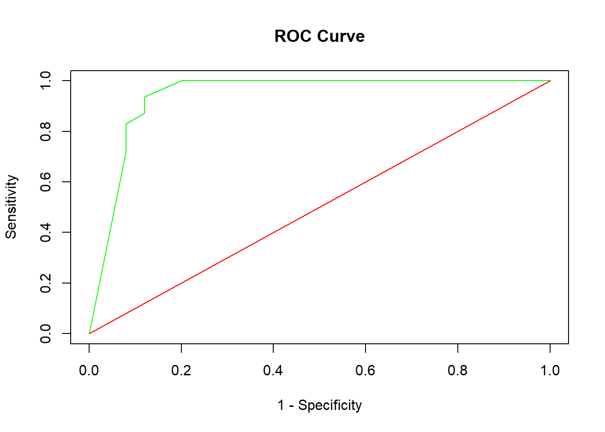
Check the quality of your result at point (c) with the R package pROC.
# install.packages("pROC")
require(pROC)## Loading required package: pROC## Type 'citation("pROC")' for a citation.##
## Attaching package: 'pROC'## The following objects are masked from 'package:stats':
##
## cov, smooth, varroc_1 = roc(response=data_leukemia_reduced$y, predictor = mod_1$fitted.values)
plot(roc_1)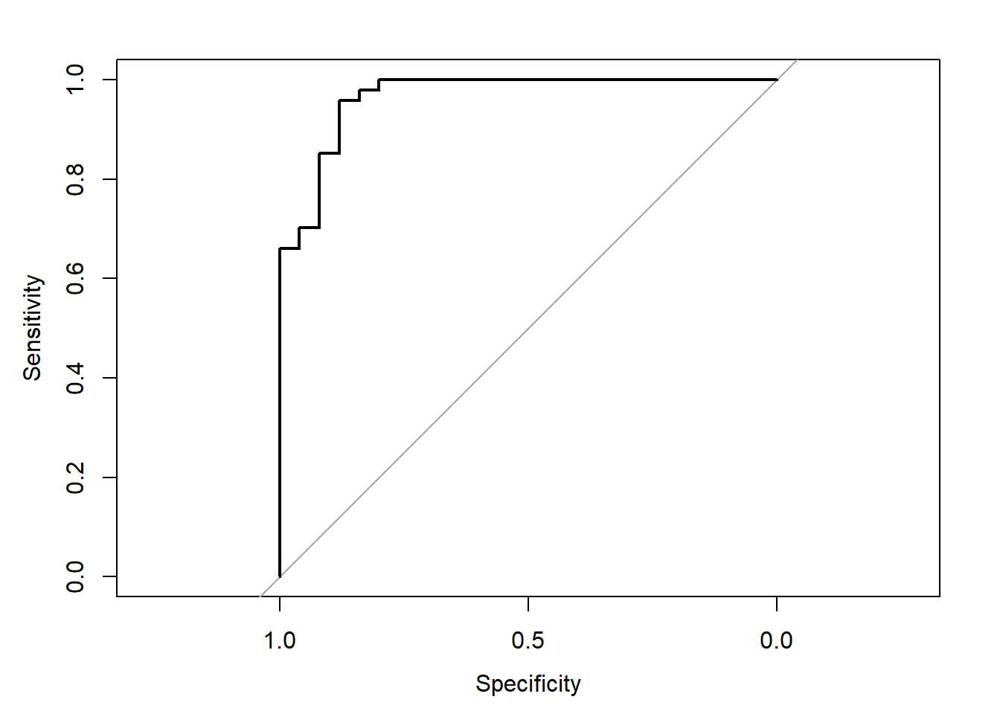
7.3 Chapter 3
7.3.1 Selection by Hypothesis Testing
First of all we retrieve the simulation setting used in Practical 3.
# install.packages("selectiveInference")
require(selectiveInference)
require(MASS)
# Create the simulation setting
set.seed(11)
n = 1000
p = 10
# change rho as you please to inspect other correlations among the predictors
rho = 0
mu = rep(1,p)
sigma = rep(0,p^2)
sigma = matrix(data = sigma, ncol = p,nrow = p)
# Autoregressive structure
for (i in 1:p) {
for (j in 1:p) {
sigma[i,j] = rho^(abs(i-j))
}
}
X = mvrnorm(n,mu,sigma)
beta = c(3,1.5,0,2,rep(0,6))
y = X%*%beta + rnorm(n,0,1) #for us sigma is 1Now, after having read the documentation of the R package selectiveInference and installed it, perform the following steps:
a) Use the functions fs(), fsInf() and forwardStop() to do a stepwise regression based on partial correlations and a model selection phase with the ForwardStop rule on your generated data. Try different values for the type one error: how does the choice of \(\alpha\) impact the model selection technique?
## Part a ##
fsfit = fs(X,y) #partial correlations like OMP or stagewise
fsfit$action #order of regressors## [1] 1 4 2 10 9 3 8 7 6 5fsfit$beta #the beta estimation at each step## 1 2 3 4 5 6 7
## [1,] 0 3.047019 3.014175 2.965561 2.96179608 2.96371055 2.96277233
## [2,] 0 0.000000 0.000000 1.486185 1.48523930 1.48682723 1.48759323
## [3,] 0 0.000000 0.000000 0.000000 0.00000000 0.00000000 0.04017513
## [4,] 0 0.000000 2.061130 2.020475 2.02252158 2.02605822 2.02658398
## [5,] 0 0.000000 0.000000 0.000000 0.00000000 0.00000000 0.00000000
## [6,] 0 0.000000 0.000000 0.000000 0.00000000 0.00000000 0.00000000
## [7,] 0 0.000000 0.000000 0.000000 0.00000000 0.00000000 0.00000000
## [8,] 0 0.000000 0.000000 0.000000 0.00000000 0.00000000 0.00000000
## [9,] 0 0.000000 0.000000 0.000000 0.00000000 0.07326696 0.07269192
## [10,] 0 0.000000 0.000000 0.000000 -0.07675033 -0.07526561 -0.07532284
## 8 9 10
## [1,] 2.96311034 2.96286548 2.96191272
## [2,] 1.48716658 1.48859575 1.48770072
## [3,] 0.03987444 0.03973915 0.04053624
## [4,] 2.02693788 2.02776730 2.02659795
## [5,] 0.00000000 0.00000000 0.00000000
## [6,] 0.00000000 0.00000000 0.01967913
## [7,] 0.00000000 -0.02997558 -0.02864951
## [8,] -0.03210415 -0.03298970 -0.03201230
## [9,] 0.07351783 0.07405473 0.07443275
## [10,] -0.07361395 -0.07454985 -0.07369007# compute sequential p-values and confidence intervals (sigma estimated from full model)
out = fsInf(fsfit,alpha = 0.1) #default
out # the value of forward stop is the last regressor which is active##
## Call:
## fsInf(obj = fsfit, alpha = 0.1)
##
## Standard deviation of noise (specified or estimated) sigma = 0.997
##
## Sequential testing results with alpha = 0.100
## Step Var Coef Z-score P-value LowConfPt UpConfPt LowTailArea UpTailArea
## 1 1 3.047 97.561 0.000 2.995 3.099 0.048 0.048
## 2 4 2.061 65.227 0.000 2.009 2.113 0.049 0.049
## 3 2 1.486 47.535 0.000 1.435 1.538 0.049 0.049
## 4 10 -0.077 -2.420 0.834 -0.077 1.345 0.050 0.050
## 5 9 0.073 2.306 0.019 0.052 1.527 0.050 0.050
## 6 3 0.040 1.267 0.567 -0.334 0.193 0.050 0.050
## 7 8 -0.032 -1.003 0.660 -0.368 0.857 0.050 0.050
## 8 7 -0.030 -0.922 0.261 -0.906 0.291 0.050 0.050
## 9 6 0.020 0.614 0.621 -0.694 0.377 0.050 0.050
## 10 5 0.016 0.482 0.223 -0.175 0.737 0.050 0.050
##
## Estimated stopping point from ForwardStop rule = 3# estimate optimal stopping point
last = forwardStop(out$pv, alpha=0.4) # you want to reject more often fixing higher alfa
stop_point = forwardStop(out$pv,alpha = 0.85)
fsfit$action[1:last] # to catch right components## [1] 1 4 2 10 9# Conclusions: fixing a higher alfa will let you include on average more regressors as you will reject more often H0 the null hypothesis.
- Given the order of variables produced by fs(), use AIC and BIC criteria for model selection to retrieve your final model (Hint: you do not need to program them, use an existing function of the selectiveInference package).
## Part b ##
# We use the same fit, the k step is decided by AIC penalty
out_2 = fsInf(fsfit,type = "aic",alpha = 0.05) #akaike case, the fixed value of alfa is 0.1
out_2 #be careful check with classic AIC evaluation (sometimes is not correct)##
## Call:
## fsInf(obj = fsfit, alpha = 0.05, type = "aic")
##
## Standard deviation of noise (specified or estimated) sigma = 0.997
##
## Testing results at step = 5, with alpha = 0.050
## Var Coef Z-score P-value LowConfPt UpConfPt LowTailArea UpTailArea
## 1 2.964 94.680 0.000 2.903 3.103 0.025 0.025
## 4 2.026 63.996 0.000 1.964 2.091 0.024 0.025
## 2 1.487 47.540 0.000 1.425 1.563 0.025 0.024
## 10 -0.075 -2.373 0.839 -0.099 1.711 0.025 0.025
## 9 0.073 2.306 0.024 0.001 1.863 0.025 0.025
##
## Estimated stopping point from AIC rule = 5# We have already an idea that AIC tends to overfit
### YOU CAN PROGRAM AIC USING ORDER IN fsfit$action ###
# We use the same fit, the k step is decided by BIC penalty
out_3 = fsInf(fsfit, type = "aic", mult = log(n)) #bic case
out_3##
## Call:
## fsInf(obj = fsfit, type = "aic", mult = log(n))
##
## Standard deviation of noise (specified or estimated) sigma = 0.997
##
## Testing results at step = 3, with alpha = 0.100
## Var Coef Z-score P-value LowConfPt UpConfPt LowTailArea UpTailArea
## 1 2.966 94.889 0 2.914 3.018 0.048 0.048
## 4 2.020 63.917 0 1.968 2.073 0.050 0.049
## 2 1.486 47.535 0 1.435 1.538 0.049 0.049
##
## Estimated stopping point from AIC rule = 3# Another nice evidence, BIC has harsh penalty than AIC.
# Other possibilities of fsInf() function
out_4 = fsInf(fsfit,type = "all",k = 4,mult = log(n))
# this is just to stop at a fixed number of steps
out_4##
## Call:
## fsInf(obj = fsfit, k = 4, type = "all", mult = log(n))
##
## Standard deviation of noise (specified or estimated) sigma = 0.997
##
## Testing results at step = 4, with alpha = 0.100
## Var Coef Z-score P-value LowConfPt UpConfPt LowTailArea UpTailArea
## 1 2.962 94.652 0.000 2.910 3.040 0.048 0.049
## 4 2.023 63.959 0.000 1.967 2.075 0.050 0.049
## 2 1.485 47.501 0.000 1.433 1.537 0.049 0.050
## 10 -0.077 -2.420 0.834 -0.077 1.345 0.050 0.050
- Calculate how many models are needed for an exhaustive search in this simulation setting. Use your previous results obtained in Practical 3 to understand the computational time gained by stepwise regression with respect to exhaustive search. Use the package tictoc for this comparison.
## Part c ##
# Look at Practical 3, see your exhaustive search time for p=10.
# In my case around 17 minutes for 1023 models (2^10 -1) since I used 1sec per model
require(tictoc)
tic()
fsfit = fs(X,y)
out = fsInf(fsfit) #default
last = forwardStop(out$pv, alpha=0.05) # you want to reject more often fixing higher alfa
Sys.sleep(1)
toc()
# 1.81 against 17 minutes... Exhaustive vs stepwise, a huge gain indeed!
- (Optional) Change the simulation setting outlined above to an high dimensional one: generate from a MVN (multivariate normal) a matrix \(\mathbf{X_{nxp}}\) with \(n = 100\) and \(p = 150\). Evaluate the performance of the ForwardStop rule in this high dimensional setting (i.e. by replicating the model selection task 100 times) thanks to the usual three specific criteria: the proportion of times the correct model is selected (Exact), the proportion of times the selected model contains the correct one (Correct) and the average number of selected regressors (Average \(\sharp\)}). What do you observe? What is the role of \(\alpha\) in this case?
## Part d ##
# Create the simulation setting
set.seed(11)
n = 100
p = 100
#p = 150 --> It does not work as we can not invert this kind of matrix thus we need n > or = than p
# change rho as you please to inspect other correlations among the predictors
rho = 0
mu = rep(1,p)
sigma = rep(0,p^2)
sigma = matrix(data = sigma, ncol = p,nrow = p)
# Autoregressive structure
for (i in 1:p) {
for (j in 1:p) {
sigma[i,j] = rho^(abs(i-j))
}
}
X = mvrnorm(n,mu,sigma)
beta = c(3,1.5,0,2,rep(0,96))
y = X%*%beta + rnorm(n,0,1) #for us sigma is 1
fsfit = fs(X,y) #partial correlations like OMP or stagewise
# You need to have p < n to work with this kind of package. Or you can do a first screening based on
# marginal correlations (like in SIS): order them and take the first n.
sigma_hat = estimateSigma(X,y)
# You need to estimate sigma in this big models. If not there is bad estimation by default since sigma
# is estimated on the full model.
# compute sequential p-values and confidence intervals
out = fsInf(fsfit,sigma = 0.977)
out # the value of forward stop is the last regressor which is active
# estimate optimal stopping point
last = forwardStop(out$pv, alpha=0.05) # you want to reject more often fixing higher alfa
fsfit$action[1:last] # to catch right components
# Evaluation with model selection criteria
order = list()
for (z in 1:100) {
y = X%*%beta + rnorm(n,0,1)
fsfit = fs(X,y)
sigma_hat = estimateSigma(X,y)
a = sigma_hat$sigmahat
out = fsInf(fsfit,sigma = a)
last = forwardStop(out$pv, alpha=0.05) # you want to reject more often fixing higher alfa
order[[z]] = fsfit$action[1:last]
}
### Exact models ###
exact = rep(0,100)
for (i in 1:100) {
if (identical(order[[i]],c(1,4,2)) == TRUE){
exact[i] = 1
}
}
sum(exact)/100
### Correct (related to consistency in model selection) ###
prop_cor = rep(0,100)
for (i in 1:100) {
if (length(order[[i]]) >= 3) {
prop_cor[i] = 1
}
}
sum(prop_cor)/100 #Due to the low number of observations n=100
### Average number of regressors ###
# Find the number of elements in each order[[z]]
num.el = sapply(order, length)
sum(num.el)/100
# The role of alfa is the same as before, as you increase it you get overfitting while if you lower it
# you will reject more often thus leading to a sparser model. Consider the Malnutrition in Zambia dataset. For simplicity work only on the continuous covariates (i.e. avoiding factors) and order them according to their partial correlations using the R function fs of the Selective Inference R Package (https://cran.r-project.org/web/packages/selectiveInference/index.html). Compare the selected models when using:
- the ForwardStop
- the \(C_p\) or AIC (equal in linear case)
- the BIC
load("malnutrion_zambia_cleaned.Rda")
data_zambia = data_zambia[,c(1:7,21,22,24)] #exclude the factors from the analysis
### selective inference package ###
## ForwardStop rule ##
X = as.matrix(data_zambia[,2:10])
y = data_zambia[,1]
fsfit = fs(X,y)
fsfit$action #order by partial correlations## [1] 1 5 8 7 6 3 2 9 4# compute sequential p-values and confidence intervals # (sigma estimated from full model)
out = fsInf(fsfit)
# The above function is using forward stop and pvalue evaluated at each step with forwardstop
# It is a formula to control FDR.
out ##
## Call:
## fsInf(obj = fsfit)
##
## Standard deviation of noise (specified or estimated) sigma = 1.592
##
## Sequential testing results with alpha = 0.100
## Step Var Coef Z-score P-value LowConfPt UpConfPt LowTailArea UpTailArea
## 1 1 -0.062 -12.229 0.000 -0.070 -0.053 0.049 0.050
## 2 5 5.209 8.937 0.000 3.812 6.179 0.049 0.049
## 3 8 0.283 4.901 0.400 -0.662 0.337 0.050 0.050
## 4 7 0.000 4.719 0.126 0.000 0.000 0.050 0.050
## 5 6 0.011 2.902 0.369 -0.051 0.074 0.050 0.050
## 6 3 0.015 2.380 0.182 -0.029 0.131 0.050 0.050
## 7 2 -0.005 -1.865 0.422 -0.029 0.026 0.050 0.050
## 8 9 0.003 1.616 0.107 -0.002 0.025 0.050 0.050
## 9 4 -0.081 -0.683 0.478 -0.451 0.529 0.050 0.050
##
## Estimated stopping point from ForwardStop rule = 2forwardStop(out$pv, alpha=.10) #only breastfeeding and height of the mother matters## [1] 2## AIC and BIC penalty to decide step k ##
out_2 = fsInf(fsfit,type = "aic") #akaike case, the fixed value of alfa is 0.1
out_2 #estimated stopping point is correct. ##
## Call:
## fsInf(obj = fsfit, type = "aic")
##
## Standard deviation of noise (specified or estimated) sigma = 1.592
##
## Testing results at step = 9, with alpha = 0.100
## Var Coef Z-score P-value LowConfPt UpConfPt LowTailArea UpTailArea
## 1 -0.053 -7.681 0.016 -0.105 -0.015 0.050 0.05
## 5 1.348 0.394 0.552 -27.065 17.845 0.000 0.05
## 8 0.285 4.904 0.418 -0.716 0.340 0.050 0.05
## 7 0.000 3.178 0.330 0.000 0.000 0.050 0.05
## 6 0.043 0.909 0.401 -0.196 0.236 0.050 0.05
## 3 0.012 1.804 0.266 -0.048 0.127 0.050 0.05
## 2 -0.006 -1.904 0.414 -0.029 0.026 0.050 0.05
## 9 0.003 1.636 0.483 -0.026 0.024 0.050 0.05
## 4 -0.081 -0.683 0.436 -0.575 0.527 0.049 0.05
##
## Estimated stopping point from AIC rule = 9# You notice that AIC tends to overfit in this framework. Remember that we were doing
# exhaustive search and not stepwise with AIC in the other Practicals.
out_3 = fsInf(fsfit, type = "aic", mult = log(n)) #bic case
out_3 # BIC has a harsh penalty that correct AIC tendency to overfit (in this applied context)##
## Call:
## fsInf(obj = fsfit, type = "aic", mult = log(n))
##
## Standard deviation of noise (specified or estimated) sigma = 1.592
##
## Testing results at step = 5, with alpha = 0.100
## Var Coef Z-score P-value LowConfPt UpConfPt LowTailArea UpTailArea
## 1 -0.061 -12.032 0.000 -0.070 -0.053 0.049 0.049
## 5 3.735 5.775 0.060 -0.271 7.845 0.050 0.050
## 8 0.285 4.917 0.417 -0.716 0.345 0.050 0.049
## 7 0.000 3.292 0.340 0.000 0.000 0.050 0.050
## 6 0.011 2.902 0.369 -0.051 0.074 0.050 0.050
##
## Estimated stopping point from AIC rule = 5# Here we are in a reality case so AIC is not optimal anymore as in our simulation setting, we expect
# something different while forward stop control the FRD. BIC has a harsh penalty that is why it
# selects less variables. Moreover we know that, from previous practicals, our residuals inspection
# told us that we had a right tail with respect to the Normal QQ plot (see ebook corrections). 7.3.2 Sure Independence Screening
- Load the Leukemia dataset.
- Split the dataset randomly and create a train and test sample.
require(SIS) #install it if you do not have it
# Leukemia dataset taken from SIS package.
train_set = data(leukemia.train)
test_set = data("leukemia.test")
train_set = as.data.frame(train_set)
test_set = as.data.frame(test_set)
X_train = as.matrix(leukemia.train[,1:7129])
y_train = leukemia.train[,7130]
X_test = as.matrix(leukemia.test[,1:7129])
y_test = leukemia.test[,7130]
- The functions SIS() performs first a screening procedure based on marginal correlations and then applies a penalized method (Chapter 4 of the e-book) to obtain the final model. Choose among all the available options (i.e. in terms both of penalized methods and tuning constants) three candidates and evaluate the predictions of the selected models on the test sample. Which penalized method performs best in this specific example after the SIS?
# Model Phase
model_leuk_scad=SIS(X_train, y_train, family='binomial') #SCAD is default## Iter 1 , screening: 3320
## Iter 1 , selection: 3320
## Iter 1 , conditional-screening: 847
## Iter 2 , screening: 847 3320
## Iter 2 , selection: 3320
## Model already selectedmodel_leuk_lasso = SIS(X_train, y_train, family='binomial',penalty = 'lasso')## Iter 1 , screening: 3320
## Iter 1 , selection: 3320
## Iter 1 , conditional-screening: 847
## Iter 2 , screening: 847 3320
## Iter 2 , selection: 847 3320
## Maximum number of variables selectedmodel_leuk_mcp = SIS(X_train, y_train, family='binomial',penalty = 'MCP')## Iter 1 , screening: 3320
## Iter 1 , selection: 3320
## Iter 1 , conditional-screening: 847
## Iter 2 , screening: 847 3320
## Iter 2 , selection: 3320
## Model already selected# Prediction Phase
pred_scad=predict(model_leuk_scad,X_test,type="class")
sum(pred_scad == y_test)/34 #0.7941176 ## [1] 0.7941176pred_lasso=predict(model_leuk_lasso,X_test,type="class")
sum(pred_lasso == y_test)/34 # 0.7941176## [1] 0.7941176pred_mcp=predict(model_leuk_mcp,X_test,type="class")
sum(pred_mcp == y_test)/34 # 0.7941176## [1] 0.7941176# We got the same predictions for every method.
# SCAD and MCP are near in terms of coefficient estimates but Lasso has one regressor more. 7.3.3 PC-simple algorithm
First of all build a simulation setting as explained below:
- Generate from a MVN (multivariate normal) a matrix \(\mathbf{X_{n*p}}\) with \(n = 1000\) and \(p = 10\). Choose the location but set the scale matrix with an autoregressive form \(\boldsymbol{\Sigma}=[\sigma_{lm}]_{l,m=1,\ldots,p}\) with \(\sigma_{lm} = \rho^{\mid l - m\mid}\). - Fix \(\rho = 0.5\) and set the seed equal to 11 (i.e. set.seed(11)).
- Choose the generating vector \(\boldsymbol{\beta }= [3 \; 1.5 \; 0 \; 2 \; rep(0,6)]\).
- Generate \(\mathbf{\hat{y}}\) thanks to the relation \(\mathbf{y} = \mathbf{X_{n*p}} \; \boldsymbol{\beta} + \boldsymbol{\epsilon}\) where \(\epsilon_{i}\) is a standard normal. Suppose for simplicity that the errors are uncorrelated.
## Simulation Setting
require(MASS)
set.seed(11)
n = 100
p = 10
# change rho as you please to inspect other correlations among the predictors
rho = 0.5
mu = rep(1,p)
sigma = rep(0,p^2)
sigma = matrix(data = sigma, ncol = p,nrow = p)
# Autoregressive structure
for (i in 1:p) {
for (j in 1:p) {
sigma[i,j] = rho^(abs(i-j))
}
}
X = mvrnorm(n,mu,sigma)
dim(X)## [1] 100 10beta = c(3,1.5,0,2,rep(0,6))
y = X%*%beta + rnorm(n,0,1) #for us sigma is 1Now perform the following passages on your simulated data:
a) Find the active set \(M_{1}\) using the Fisher’s Z transformation and the associated correlation coefficient test (fix \(\alpha = 0.05\) for the rest of the exercise).
## Part a
# Fix alfa at 5% for all the exercise
v_cor = cor(x = X,y = y)
q=rep(0,10)
for (i in 1:10) {
if(sqrt(n-3)*abs(1/2*log((1 + v_cor[i])/(1-v_cor[i]))) > 1.96 ) {
q[i]=1
}
}
A_0 = X #Active set zero
# With the first step we select the first 5 variables, we reject H0 so that we have evidence that the
# correlation is different from 0.
A_1 = X[,1:5] #new active set
- Calculate all the partial correlations of order 1 (i.e. one variable at the time) of the active set \(M_{1}\), test them and retrieve \(M_{2} \subseteq M_1\) which is the new active set.
## Part b
# We can now create the 20x1 vector of first order partial correlation and then apply previous formula
P = rep(0,25)
P = matrix(P,nrow = 5,ncol = 5)
for (z in 1:5) {
for (i in 1:5) {
if (i != z ) {
mod_1 = lm(A_1[,z] ~ A_1[,i])
e_1 = A_1[,z] - cbind(rep(1,n),A_1[,i])%*%mod_1$coefficients
mod_2 = lm(y ~ A_1[,i])
e_2 = y - cbind(rep(1,n),A_1[,i])%*%mod_2$coefficients
P[i,z] = cor(e_1,e_2)
}
}
}
P = P + diag(5)
v_cor = c(P) #vectorization
# fix alfa at 5% and test the sample correlation.
q=rep(0,25)
# Cardinality of the active set is now 1 because we are evaluating partial correaltions of order 1
for (i in 1:25) {
if(sqrt(n-4)*abs(1/2*log((1 + v_cor[i])/(1-v_cor[i]))) > 1.96 ) {
q[i]=1
}
}
q # variables 3 and 5 are eliminated from the active set
A_2 = X[,c(1,2,4)]
- Find the partial correlations of higher order and test them until your reach the condition \(M_{m-1} = M_{m}\) which implies the convergence of the PC-simple algorithm. Do you obtain the exact model?
## Part c
# Now we need to check 2nd order partial correlation to discriminate.
# Note: we could also update estimation for partial correlation in order to speed up the computations
# but in this easy example is not necessary.
# VARIABLE 1 ACTIVE SET A_2
mod_1 = lm(A_2[,1] ~ A_2[,2] + A_2[,3])
e_1 = A_2[,1] - cbind(rep(1,n),A_2[,2],A_2[,3])%*%mod_1$coefficients
mod_2 = lm(y ~ A_2[,2] + A_2[,3])
e_2 = y - cbind(rep(1,n),A_2[,2],A_2[,3])%*%mod_2$coefficients
# Cardinality of active set now is two!
sqrt(n-5)*abs(1/2*log((1 + cor(e_1,e_2))/(1-cor(e_1,e_2)))) > 1.96
# VARIABLE 2 ACTIVE SET A_2
mod_1 = lm(A_2[,2] ~ A_2[,1] + A_2[,3])
e_1 = A_2[,2] - cbind(rep(1,n),A_2[,1],A_2[,3])%*%mod_1$coefficients
mod_2 = lm(y ~ A_2[,1] + A_2[,3])
e_2 = y - cbind(rep(1,n),A_2[,1],A_2[,3])%*%mod_2$coefficients
# Cardinality of active set now is two!
sqrt(n-5)*abs(1/2*log((1 + cor(e_1,e_2))/(1-cor(e_1,e_2)))) > 1.96
# VARIABLE 3 ACTIVE SET A_2
mod_1 = lm(A_2[,3] ~ A_2[,1] + A_2[,2])
e_1 = A_2[,3] - cbind(rep(1,n),A_2[,1],A_2[,2])%*%mod_1$coefficients
mod_2 = lm(y ~ A_2[,1] + A_2[,2])
e_2 = y - cbind(rep(1,n),A_2[,1],A_2[,2])%*%mod_2$coefficients
# Cardinality of active set now is two!
sqrt(n-5)*abs(1/2*log((1 + cor(e_1,e_2))/(1-cor(e_1,e_2)))) > 1.96
# Conclusions: all conditions are true, then the algorithm will not move anymore and we have
# our final model with the original variables c(1,2,4) which is also the exact one. 7.3.4 Regression Tree
- Load the Zambia dataset, split it randomly in a train and test sample (common choice is \(\frac{2}{3}\) train and \(\frac{1}{3}\) test). For simplicity, you can consider only the continuous variables.
require(rpart)
load("malnutrion_zambia_cleaned.Rda")
data_zambia = data_zambia[,c(1:7,21,22,24)] #exclude the factors from the analysis
X = as.matrix(data_zambia[,2:10])
y = data_zambia[,1]
## Part a
ind = 1:1927
index = sample(x = ind,size = 1284,replace = F)
data_zambia_train= data_zambia[index,]
data_zambia_test= data_zambia[-index,]
- Fit a regression tree with the function rpart() and plot the tree. Have a look at rpart.plot package if you want to improve the appearance of the fitted tree.
## Part b
# grow tree
attach(data_zambia_train)
fit <- rpart(`Height for age sd`~
`Breastfeeding duration (months)` + `Age of the child (months)`+`Age of the mother (years)`+`BMI mother`+`Heigth mother (meter)`+`Weight mother (kg)`+`Wealth index factor score`+`Child weight at birth (kg)`+`Interval between births`,
method="anova", data=data_zambia_train)
printcp(fit) # display the results ##
## Regression tree:
## rpart(formula = `Height for age sd` ~ `Breastfeeding duration (months)` +
## `Age of the child (months)` + `Age of the mother (years)` +
## `BMI mother` + `Heigth mother (meter)` + `Weight mother (kg)` +
## `Wealth index factor score` + `Child weight at birth (kg)` +
## `Interval between births`, data = data_zambia_train, method = "anova")
##
## Variables actually used in tree construction:
## [1] Age of the child (months) Child weight at birth (kg)
## [3] Heigth mother (meter) Interval between births
## [5] Wealth index factor score Weight mother (kg)
##
## Root node error: 3949.2/1284 = 3.0757
##
## n= 1284
##
## CP nsplit rel error xerror xstd
## 1 0.085434 0 1.00000 1.00140 0.049312
## 2 0.027354 1 0.91457 0.92121 0.043830
## 3 0.014385 2 0.88721 0.91542 0.044182
## 4 0.013865 3 0.87283 0.94016 0.045852
## 5 0.011370 4 0.85896 0.94585 0.046185
## 6 0.010284 5 0.84759 0.94109 0.045973
## 7 0.010160 7 0.82702 0.94040 0.045758
## 8 0.010000 8 0.81686 0.94034 0.045801plotcp(fit) # visualize cross-validation results 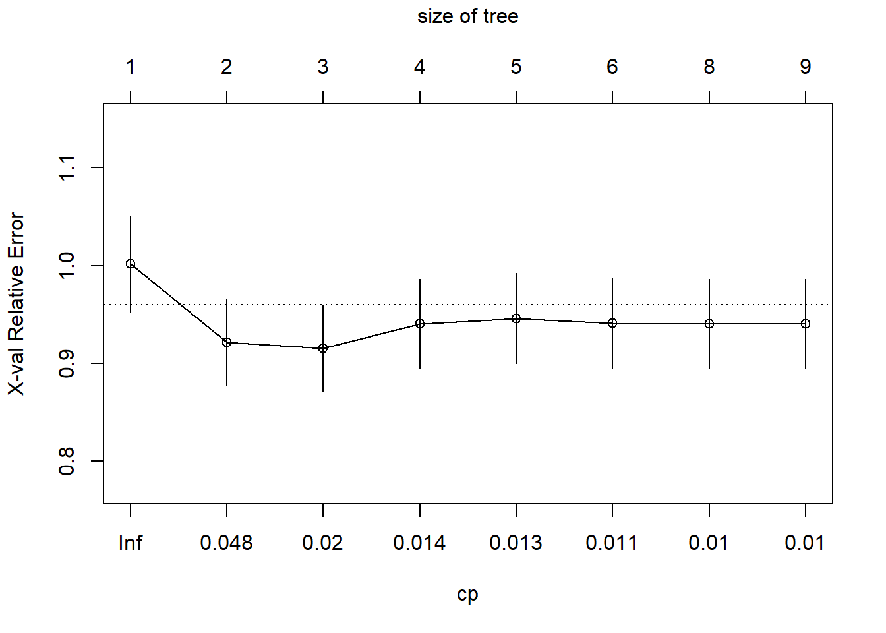
# summary(fit) detailed summary of splits
library(rattle)
library(rpart.plot)
library(RColorBrewer)
fancyRpartPlot(fit)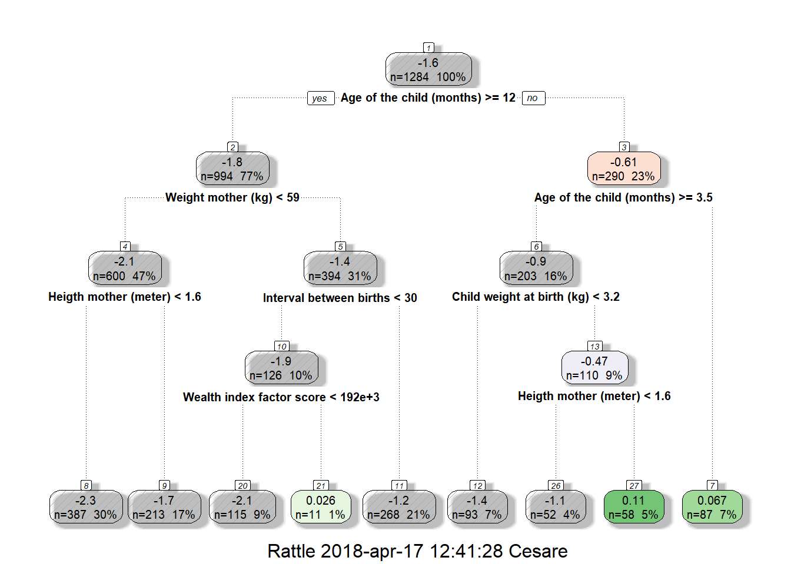
detach(data_zambia_train)
- After having pruned the tree, evaluate its prediction on the test sample (i.e. use predict() on a tree object.
## Part c
attach(data_zambia_train)
# prune the tree
fit$cptable[which.min(fit$cptable[,"xerror"]),"CP"]## [1] 0.01438482fit$cptable## CP nsplit rel error xerror xstd
## 1 0.08543400 0 1.0000000 1.0013950 0.04931249
## 2 0.02735374 1 0.9145660 0.9212097 0.04382993
## 3 0.01438482 2 0.8872123 0.9154191 0.04418249
## 4 0.01386532 3 0.8728274 0.9401599 0.04585160
## 5 0.01137031 4 0.8589621 0.9458524 0.04618497
## 6 0.01028396 5 0.8475918 0.9410920 0.04597282
## 7 0.01016050 7 0.8270239 0.9404004 0.04575772
## 8 0.01000000 8 0.8168634 0.9403443 0.04580068pfit<- prune(fit, cp=0.02406722) # from cptable
fancyRpartPlot(pfit) 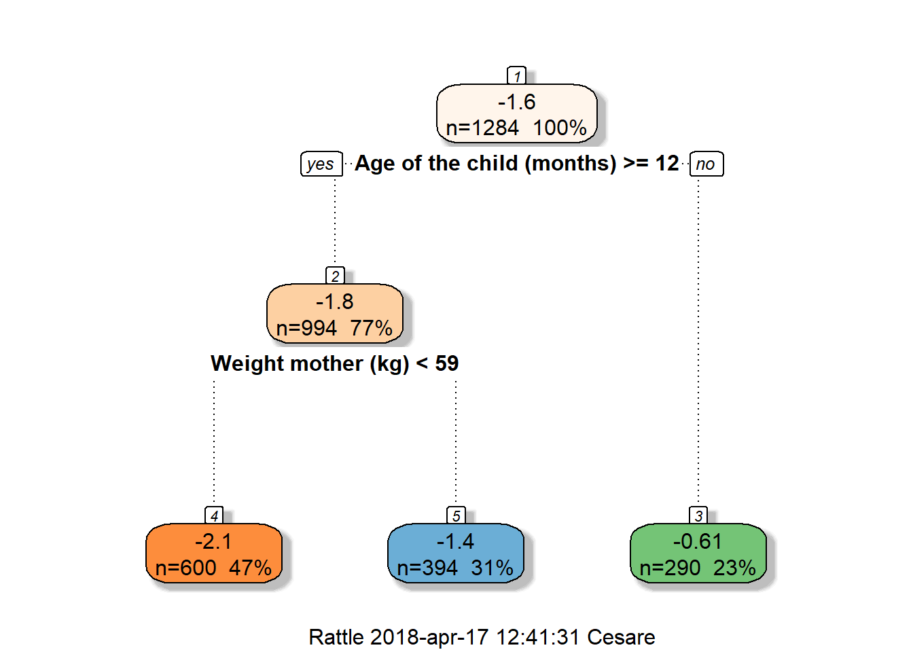
# Notice the different tree after pruning: Age of the child and Weight of the mother stays relevant
# while other variables disappear.
Prediction <- predict(pfit, data_zambia_test, type = "vector")
# We can use the mean squared error to evaluate the predictions
mse = sum((Prediction - data_zambia_test$`Height for age sd`)^2)/length(Prediction)
detach(data_zambia_train)
# Now we should find a benchmark to understand how well is doing the Regression Tree
# In this case we will use linear regression plus model selection thanks to FDR rule.
X_train = as.matrix(data_zambia_train[,2:10])
mod_zambia = lm(data_zambia_train[,1] ~ X_train, data = data_zambia_train)
object = summary(mod_zambia)
# Fix a level q = 0.05 of FDR (see Hochberg&Benjamini), order the p-values and we reject three H0 thus
# selecting variables: Breastfeeding duration, Weight at birth and wealth index factor scores.
mod_zambia_final = lm(data_zambia_train[,1] ~ X_train[,c(1,7,8)], data = data_zambia_train)
X_test = as.matrix(data_zambia_test[,c(2,8,9)])
predictions_linear = cbind(rep(1,643),X_test)%*%mod_zambia_final$coefficients
mse_linear = sum((predictions_linear - data_zambia_test$`Height for age sd`)^2)/length(Prediction)
# Similar to the one of the Regression Tree so there is not a big improvement.
mse## [1] 2.401796mse_linear## [1] 2.3679267.3.5 Classification Tree
- Load the Iris dataset already present in R, split it randomly in a train and test sample (common choice is \(\frac{2}{3}\) train and \(\frac{1}{3}\) test).
## Part a
data_iris = iris
ind = 1:150
index = sample(x = ind,size = 100,replace = F)
train= data_iris[index,]
test= data_iris[-index,]
- Fit a classification tree with the function rpart() and plot the tree. Have a look at rpart.plot package if you want to improve the appearance of the fitted tree.
## Part b
attach(train)
fit_iris = rpart(Species ~ Sepal.Length + Sepal.Width + Petal.Length + Petal.Width,
data=train,
method="class")
printcp(fit_iris) # display the results ##
## Classification tree:
## rpart(formula = Species ~ Sepal.Length + Sepal.Width + Petal.Length +
## Petal.Width, data = train, method = "class")
##
## Variables actually used in tree construction:
## [1] Petal.Length Petal.Width
##
## Root node error: 63/100 = 0.63
##
## n= 100
##
## CP nsplit rel error xerror xstd
## 1 0.50794 0 1.000000 1.07937 0.074044
## 2 0.42857 1 0.492063 0.49206 0.073412
## 3 0.01000 2 0.063492 0.12698 0.043062plotcp(fit_iris) # visualize cross-validation results 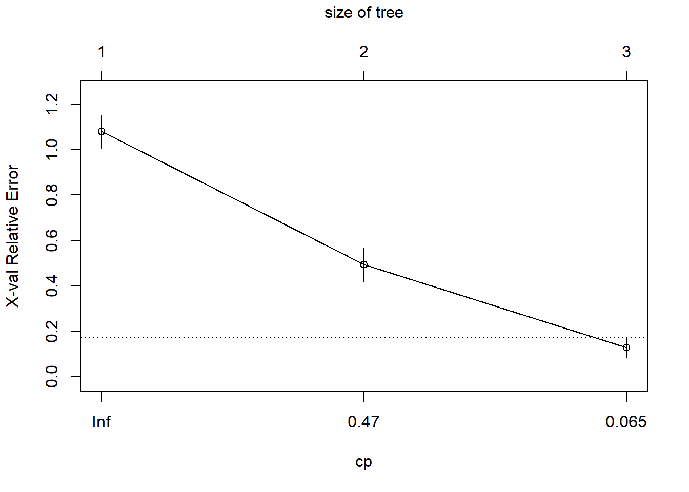
fancyRpartPlot(fit_iris)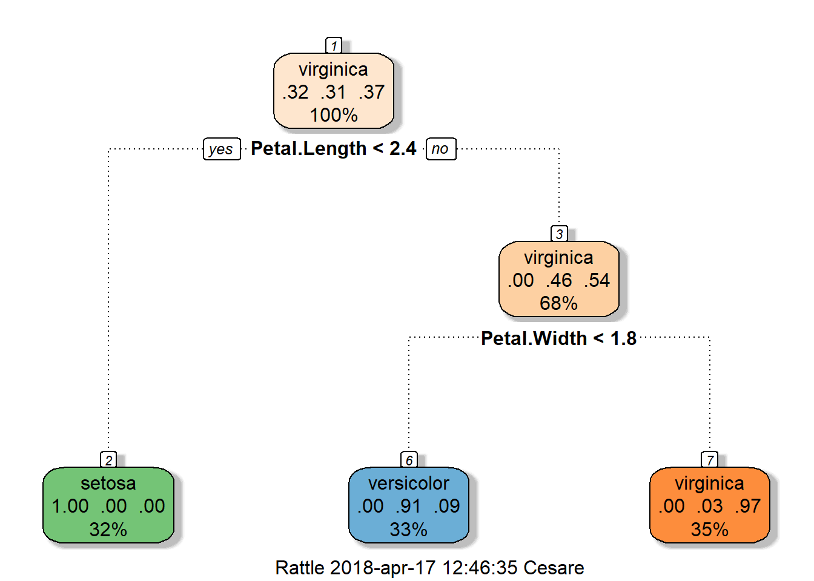
detach(train)
- After having pruned the tree, evaluate its prediction on the test sample (i.e. use predict() on a tree object).
## Part c
# prune the tree
pfit_iris<- prune(fit_iris, cp= fit$cptable[which.min(fit$cptable[,"xerror"]),"CP"])
fancyRpartPlot(pfit_iris)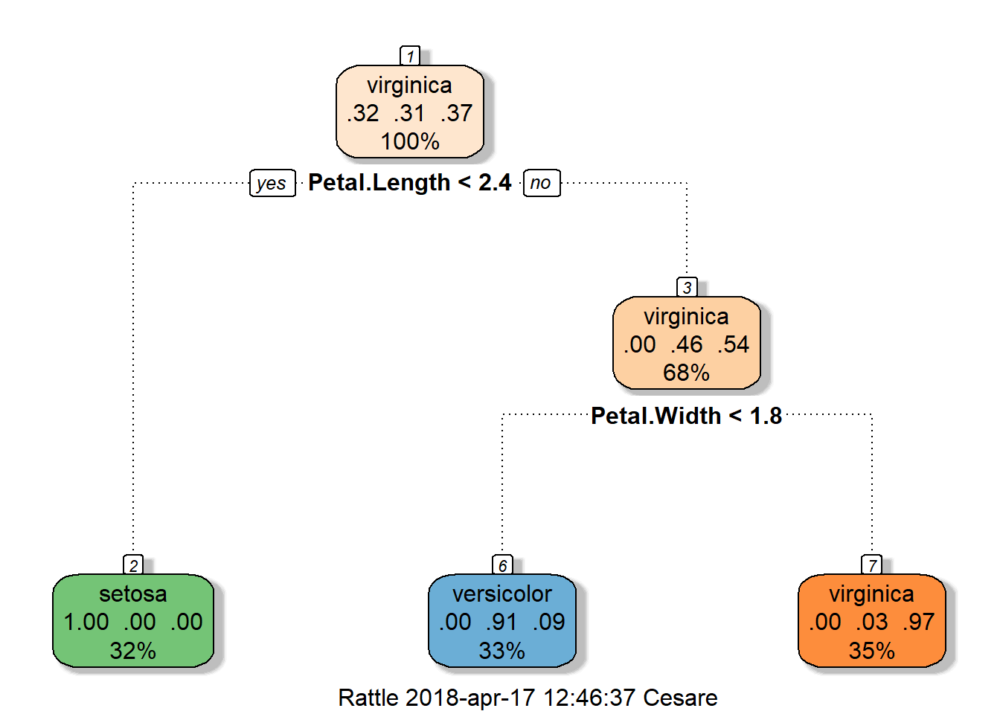
Prediction <- predict(fit_iris, test, type = "class") #pruned or not pruned trees are equal in this example
t = Prediction == test$Species
sum(t)/length(test$Species)## [1] 0.967.4 Chapter 4
7.4.1 Ridge Regression
- Use the function glmnet() to perform a Ridge regression on Zambia dataset, plot the values as a function of \(\lambda\) and comment on the results.
require(glmnet)
load("malnutrion_zambia_cleaned.Rda")
data_zambia = data_zambia[,c(1:7,21,22,24)] #exclude the factors from the analysis
X = as.matrix(data_zambia[,2:10])
y = data_zambia[,1]
## Part a
# Ridge penalty is obtained with parameter alpha = 0
mod_pen_L2 = glmnet(X,y,family = "gaussian",alpha = 0)
plot(mod_pen_L2, xvar="lambda") #more smoothed, no model selection property just shrinkage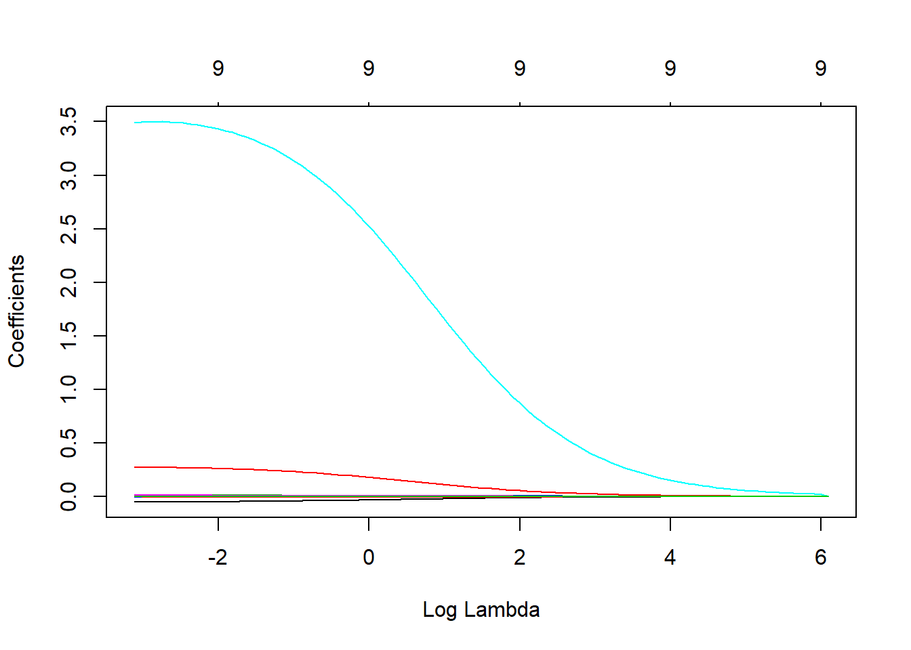
# mod_pen_L2$beta shrinked but all present- Use the function cv.glmnet() to perform model selection based on 10-fold Cross Validation (i.e. method to select the \(\lambda\) parameter), plot the results and comment the graph that you obtain. Which values of \(\lambda\) are shown by default?
## Part b
# Selection based on 10 fold CV
cv.zero_L2 <- cv.glmnet(X,y, alpha=0) #a way in which you can select lambda (10k CV)
cv.zero_L2$lambda.min## [1] 0.08504366plot(cv.zero_L2) 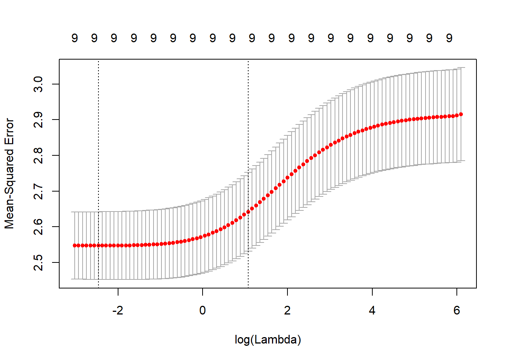
# The two vertical lines are respectively: the value of lambda that minimizes the CV error curve and
# the value lambda.1SE which is one standard error from lambda.min on the right.- Use the function predict() to retrieve the final model estimates and perform a simple linear model on the same covariates, what can you conclude?
## Part c
# Easier with predict rather than check all the order based on the single value of lambda
### MESSAGE FROM HASTIE AND TIBSHIRANI ###
# Use directly lambda.min it is prone to errors
# WARNING: use with care. Do not supply a single value for lambda (for predictions after CV use predict() instead).
# Supply instead a decreasing sequence of lambda values. glmnet relies on its warms starts for speed, and its often
# faster to fit a whole path than compute a single fit.
coef_L2_min = predict(cv.zero_L2,type="coefficient",s = "lambda.min")
coef_L2_1SE = predict(cv.zero_L2,type="coefficient") #default is lambda.1SE
model_linear = lm(y ~ .,data = data_zambia[,c(2:10)])
summary(model_linear)##
## Call:
## lm(formula = y ~ ., data = data_zambia[, c(2:10)])
##
## Residuals:
## Min 1Q Median 3Q Max
## -4.4167 -0.9869 -0.0761 0.8483 7.9208
##
## Coefficients:
## Estimate Std. Error t value Pr(>|t|)
## (Intercept) -4.646e+00 5.439e+00 -0.854 0.3931
## `Breastfeeding duration (months)` -5.273e-02 6.866e-03 -7.681 2.50e-14
## `Age of the child (months)` -5.574e-03 2.928e-03 -1.904 0.0571
## `Age of the mother (years)` 1.170e-02 6.485e-03 1.804 0.0715
## `BMI mother` -8.108e-02 1.186e-01 -0.683 0.4944
## `Heigth mother (meter)` 1.348e+00 3.423e+00 0.394 0.6938
## `Weight mother (kg)` 4.251e-02 4.674e-02 0.909 0.3632
## `Wealth index factor score` 1.261e-06 3.968e-07 3.178 0.0015
## `Child weight at birth (kg)` 2.851e-01 5.813e-02 4.904 1.02e-06
## `Interval between births` 3.250e-03 1.987e-03 1.636 0.1021
##
## (Intercept)
## `Breastfeeding duration (months)` ***
## `Age of the child (months)` .
## `Age of the mother (years)` .
## `BMI mother`
## `Heigth mother (meter)`
## `Weight mother (kg)`
## `Wealth index factor score` **
## `Child weight at birth (kg)` ***
## `Interval between births`
## ---
## Signif. codes: 0 '***' 0.001 '**' 0.01 '*' 0.05 '.' 0.1 ' ' 1
##
## Residual standard error: 1.592 on 1917 degrees of freedom
## Multiple R-squared: 0.1339, Adjusted R-squared: 0.1298
## F-statistic: 32.93 on 9 and 1917 DF, p-value: < 2.2e-16# We observe the shrinkage property of L2 norms penalties, the coefficients are shrinked to achieve a better compromise between bias and variance. For supplementary theory see Stein's estimators.7.4.2 Lasso
- Use the function glmnet() to perform a lasso on Zambia dataset, plot the values as a function of \(\lambda\) and comment on the results.
## Part 1
# Lasso penalty is obtained by setting alpha equal to one
mod_pen = glmnet(X,y,family = "gaussian",alpha = 1)
# mod_pen$beta # here you can see order of the lasso
plot(mod_pen, xvar="lambda") #plot coefficients as lambda varys, use lambda found below to select. 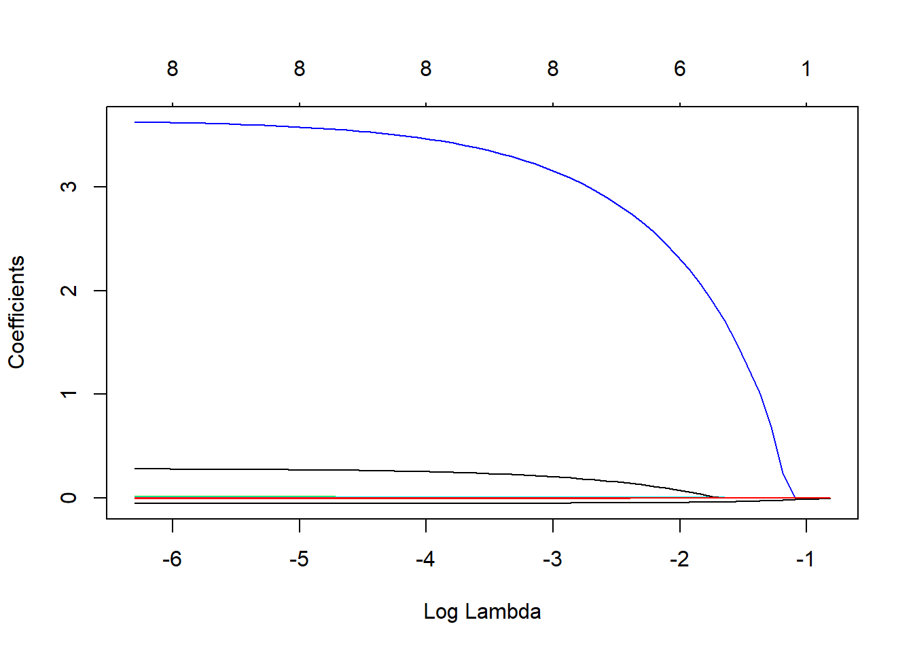
- Use the function cv.glmnet() to perform model selection based on 10-fold Cross Validation (i.e. method to select the \(\lambda\) parameter), plot the results and comment the graph that you obtain. Which values of \(\lambda\) are shown by default? What can you conclude on the choice of \(\lambda\) in terms of model selection?
## Part 2
# Selection based on 10 fold CV
cv.zero_mod <- cv.glmnet(X,y, alpha=1) #a way in which you can select lambda (10k CV)
cv.zero_mod$lambda.min## [1] 0.002010848plot(cv.zero_mod) 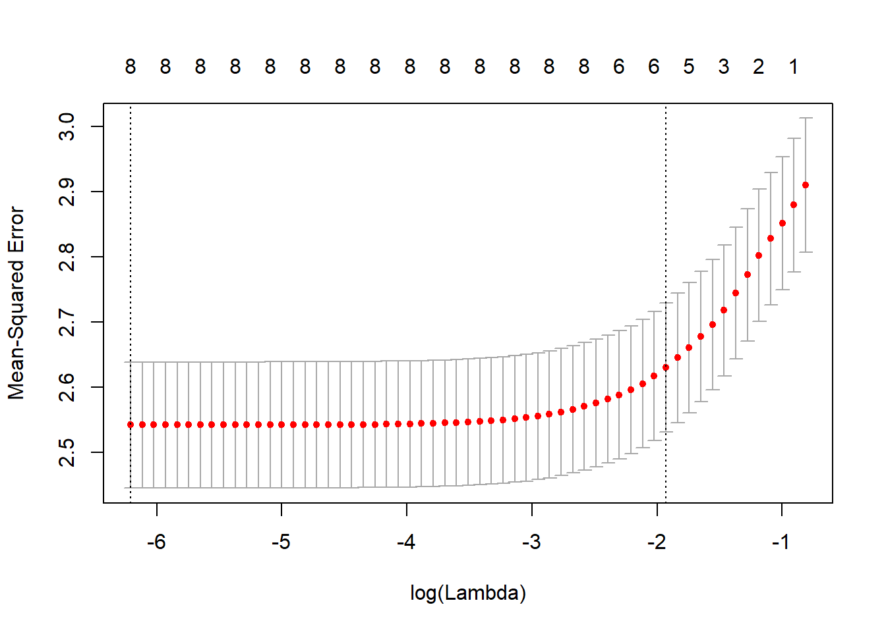
# The two vertical lines are respectively: the value of lambda that minimizes the CV error curve and
# the value lambda.1SE which is one standard error from lambda.min in the direction of a more
# parsimonious model.- Use the function predict() to retrieve the final model chosen by 10-fold CV (given lasso ordering) and perform a linear model on the covariates present in the final model. What can you conclude observing the estimates?
## Part 3
mod_pen = glmnet(X,y,family = "gaussian",alpha = 1,lambda = 0.00201) #wrong, do not use this way!
# The right way is to use the predict function
coef_L1_min = predict(cv.zero_mod,type="coefficient",s = "lambda.min")
coef_L1_1SE = predict(cv.zero_mod,type="coefficient") #default is lambda.1SE
# As you can notice, lambda min tends to select more regressors so it is less parsimonious then 1.SE
model_linear = lm(y ~ .,data = data_zambia[,c(2,3,6:9)])
summary(model_linear)##
## Call:
## lm(formula = y ~ ., data = data_zambia[, c(2, 3, 6:9)])
##
## Residuals:
## Min 1Q Median 3Q Max
## -4.4782 -0.9864 -0.0534 0.8430 7.8345
##
## Coefficients:
## Estimate Std. Error t value Pr(>|t|)
## (Intercept) -7.971e+00 9.654e-01 -8.257 2.75e-16
## `Breastfeeding duration (months)` -5.196e-02 6.863e-03 -7.571 5.74e-14
## `Age of the child (months)` -5.901e-03 2.924e-03 -2.018 0.043726
## `Heigth mother (meter)` 3.675e+00 6.483e-01 5.668 1.66e-08
## `Weight mother (kg)` 1.203e-02 3.970e-03 3.031 0.002469
## `Wealth index factor score` 1.311e-06 3.916e-07 3.349 0.000827
## `Child weight at birth (kg)` 2.822e-01 5.811e-02 4.856 1.30e-06
##
## (Intercept) ***
## `Breastfeeding duration (months)` ***
## `Age of the child (months)` *
## `Heigth mother (meter)` ***
## `Weight mother (kg)` **
## `Wealth index factor score` ***
## `Child weight at birth (kg)` ***
## ---
## Signif. codes: 0 '***' 0.001 '**' 0.01 '*' 0.05 '.' 0.1 ' ' 1
##
## Residual standard error: 1.594 on 1920 degrees of freedom
## Multiple R-squared: 0.1302, Adjusted R-squared: 0.1275
## F-statistic: 47.91 on 6 and 1920 DF, p-value: < 2.2e-16# Lasso estimates are known to be biased and we are not even sure about the signs if dimensions of predictor space
# is greater than 2. There are methods which are called "debiasing the lasso" that you can search if you are interested by this topic. Of course here we are using real data so we have always to be aware of the assumptions of each model that we are fitting. 7.4.3 Non Convex Penalties
- Fix the generating vector \(\boldsymbol{\beta}=(4,2,-4,-2,0,0,\ldots,0)\) and set the seed equal to 11 (i.e. set.seed(11)).
require(MASS)
set.seed(11)
beta = c(4,2,-4,-2,rep(0,996))- Generate from a MVN (multivariate normal) a matrix \(\mathbf{X_{n*p}}\) with \(n = 200\) and \(p = 1000\). You can choose the location vector as you wish but set the scale matrix with an autoregressive form \(\boldsymbol{\Sigma}=[\sigma_{lm}]_{l,m=1,\ldots,p}\) with \(\sigma_{lm} = \rho^{\mid l - m\mid}\).
n = 200
p = 1000
# Three values needed for rho = (0 0.2 0.5)
rho = 0
mu = rep(1,p)
sigma = rep(0,p^2)
sigma = matrix(data = sigma, ncol = p,nrow = p)
# Autoregressive structure
for (i in 1:p) {
for (j in 1:p) {
sigma[i,j] = rho^(abs(i-j))
}
}
X = mvrnorm(n,mu,sigma)- For each \(\boldsymbol{\rho} = [0 \; 0.2 \; 0.5]\) generate \(\mathbf{\hat{y}}\) thanks to the relation \(\mathbf{y} = \mathbf{X_{n*p}} \; \boldsymbol{\beta} + \boldsymbol{\epsilon}\) where \(\epsilon_{i}\) is a standard normal. Suppose for simplicity that the errors are uncorrelated.
y = X%*%beta + rnorm(n,0,1) #for us sigma is 1- Compare the solution paths (graphically as a function of \(\lambda\)) for the lasso, SCAD and MCP by fixing several values for \(\gamma\) (choose e.g. \(\gamma=(1.5, 2, 3, 3.7, 5)\)) for each value of \(\rho\) indicated at previous point.
# Paths will be presented for gamma = (2, default values, 5)
# The value 1.5 for gamma is not possible for SCAD while 3 and 3.7 are the default value for MCP and Scad respectively
require(ncvreg)
# Default gamma
model_scad = ncvreg(X = X,y = y,family = "gaussian",penalty = "SCAD") #gamma default is 3.7
model_mcp = ncvreg(X = X,y = y,family = "gaussian",penalty = "MCP") #gamma default is 3
model_lasso = ncvreg(X = X,y = y,family = "gaussian",penalty = "lasso")
# Gamma = 2
model_scad_2 = ncvreg(X = X,y = y,family = "gaussian",penalty = "SCAD",gamma = 2.1) #no scad for gamma lower than 2
model_mcp_2 = ncvreg(X = X,y = y,family = "gaussian",penalty = "MCP", gamma = 2)
# Gamma = 5
model_scad_5 = ncvreg(X = X,y = y,family = "gaussian",penalty = "SCAD", gamma = 5)
model_mcp_5 = ncvreg(X = X,y = y,family = "gaussian",penalty = "MCP", gamma = 5)
par(mfrow=c(1,3))
# gamma = 2
plot(model_lasso,main="Lasso")
plot(model_scad_2, main="Scad - Gamma 2.1")
plot(model_mcp_2, main="MCP - Gamma 2")
par(mfrow=c(1,3))
#default gamma
plot(model_lasso,main="Lasso")
plot(model_scad,main="Scad - Gamma 3.7")
plot(model_mcp, main="MCP - Gamma 3")
par(mfrow=c(1,3))
# gamma = 5
plot(model_lasso,main="Lasso")
plot(model_scad_5,main="Scad - Gamma 5")
plot(model_mcp_5, main="MCP - Gamma 5")\(\rho = 0\)
\(\rho = 0.2\)
\(\rho = 0.5\)
# Comments:
# 1) We can already see that there is a non convex behavior of Scad and MCP while Lasso path is more
# smoothed.
# 2) As gamma goes to plus infinity we notice that we go back to lasso path (smoothing procedure).
# 3) The bias is minimized as gamma approaches his minimum value.
# 4) Correlation creates a distorsion in the paths of all the three penalties.